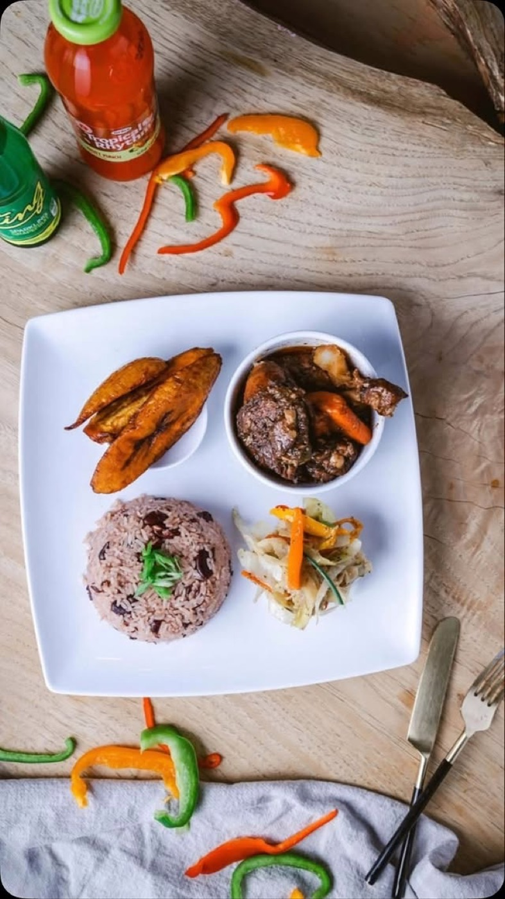

We saved
you a spot
Every great Jamaican kitchen starts the same way — with somebody’s home cooking that was too good to keep in the family.
Dalisha & Chef Nicoy
Perfect Seasoning is co-owned by Dalisha Williams and Chef Nicoy McLean — a Jamaican-born chef whose plates regulars simply call “Chef Nick’s.” What started as a single food-hall stall grew on word of mouth: oxtail that falls apart at a glance, jerk with real smoke, and the kind of seasoning that doesn’t need explaining.
The name was never marketing. It’s the standard: every dish leaves the kitchen seasoned perfectly, or it doesn’t leave.

Stall by stall, since 2020
The seasoning gets its name
Perfect Seasoning is born — authentic Jamaican cuisine, cooked the way home tastes.
First stall — Chattahoochee Food Works
The first counter on the Upper Westside, where Atlanta got its first taste and the line started forming.
Terminal South — Peoplestown
A bigger kitchen inside Switchman Hall, an 18-stall food hall on the southside — with room to grow into catering and, one day, a retail line of Jamaican spices.
The Peacherie — Midtown
Perfect Seasoning joins a chef-driven food hall on Peachtree Street, bringing the island to the heart of the city.
More to come
Bottled spice blends, new neighborhoods, bigger tables. Sign up on the home page to be first to know.
Atlanta noticed
“Whoever named this restaurant… give them a bonus.”
Taste the story yourself
Two locations, seven days of flavor. The oxtails are waiting.
Order Online →